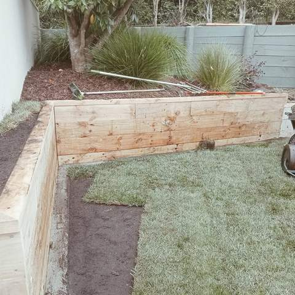
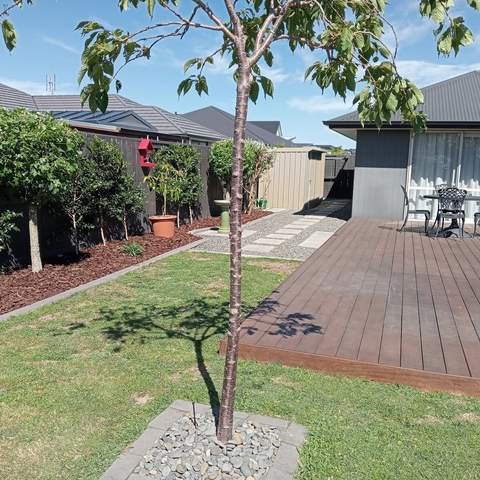

Ready Lawn Installation in Tauranga
Instant turf laid on a properly prepared base, so you get a usable lawn in weeks rather than a season.
Why ready lawn?
Sowing a lawn from seed means months of keeping birds off, pulling weeds and watering bare soil. Ready lawn, also called instant turf, arrives as rolls of established grass, goes down in a day and can usually take light use within a few weeks once it has rooted. It is the quickest way to finish a new build, a landscaping makeover or a tired backyard.
The base matters more than the turf
Most lawn problems come from what is underneath. Existing grass and weeds are sprayed out or stripped, the ground is cultivated, topsoil is added where needed, and the whole area is levelled and rolled so there are no dips to hold water. Tauranga soils range from heavy clay inland to sand at the Mount and Papamoa, so the preparation is matched to what is there.
Choosing a grass
Most ready lawn sold in New Zealand is a ryegrass and fescue blend, which stays green through the cooler months and stands up to family use. Fine fescues cope better with shade, and warm-season grasses can suit hot, dry sites. Matt will suggest what fits your sun, shade and how the lawn will be used.
Watering in
New turf needs a deep soak on the day it is laid, then regular watering until the roots knit into the soil, usually over the first two to three weeks. Gently lifting a corner shows when it has rooted and is ready for a first, high mow. If you are thinking about irrigation, it is best installed before the lawn goes down.

Newly laid lawn being watered by a sprinkler next to a hardwood deck 
Lawn with metal edging, mulched beds, a young tree and a row of standard trees along a fence 
New timber retaining wall with fresh lawn and planted bed above 
Timber retaining wall with planting above, new lawn and paved patio 
Side garden with lawn, curved concrete edging, bark mulch beds and established shrubs 
Dark-stained deck with lawn, young tree and garden beds
How we work
A simple, four-step process from first call to final tidy-up.
Enquiry
Call or text Matt on 020 4006 6910, or send the quote form. A few photos of the area help.
Site visit & itemised quote
Matt comes out, measures up and talks through options, then sends a written quote broken down by item.
Build
Work is done in the right order (earthworks, walls and drainage, irrigation, then turf, decking and planting).
Tidy handover
The site is cleaned up and you get a walk-through, plus care tips such as a watering plan for new lawn.
Ready lawn: common questions
When is the best time to lay ready lawn in Tauranga?
Autumn and spring are ideal because the soil is warm and there is regular rain. Summer works if you can water reliably, and winter laying is possible but rooting is slower.
How soon can we use a new lawn?
Keep foot traffic light until the turf has rooted, which is usually two to three weeks. After the first couple of mows it can handle normal use.
Can you lay turf over our old lawn?
Not if you want a good result. Laying over old grass leaves an uneven, poorly rooted lawn. The old surface needs to be sprayed out or stripped and the base levelled first.
Can you install irrigation at the same time?
Yes. Irrigation is one of Straight Line's services, and the best time to trench in pipes and set pop-up sprinklers is before the turf goes down.
How much does ready lawn cost?
It depends on the area, how much preparation the ground needs and access for topsoil and turf. Matt will measure up and give you a free, itemised quote.
Often combined with
Ready for a new lawn?
Get a free, itemised quote from Matt. Serving Tauranga and the Western Bay of Plenty.